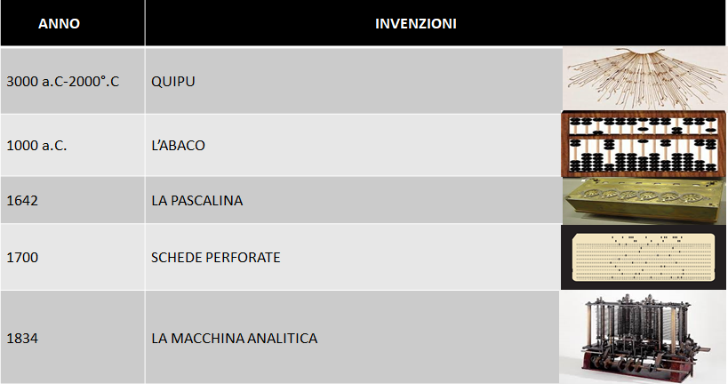
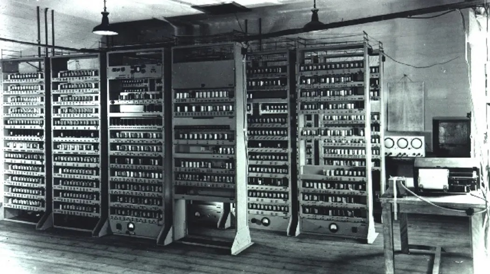
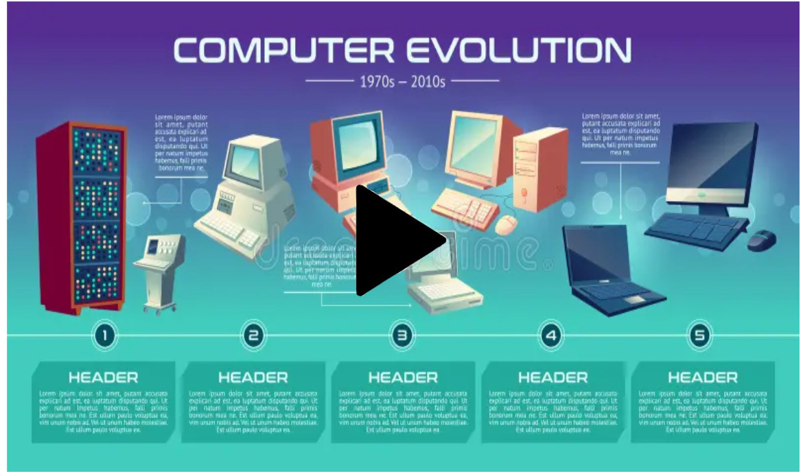

LA STORIA DELL'INFORMATICA
L'INFORMATICA PRIMA DI TURING

In realta' la storia dell'informatica inizia molto prima dell'ivenzione di Turing, infatti possiamo considerare parte dell'informatica tutto cio che viene usato per eseguire calcoli.
ci sono molti strumenti per eseguire calcoli ad esempio:
Durante il XIV secolo due scenziati molto importanti iniziarono a lavorare ad un progetto che cambiera per sempre la storia dell'umanità.
Charles Babbage e Ada Lovelace furono i due grandi scenziati che crearono il progetto della LA MACCHINA ANALITICA purtroppo senza realizzarlo mai
Nel 1944 un famoso matematico creò una tipologia di architettura hardware per computer digitali programmabili a programma memorizzato la quale condivide i dati del programma e
le istruzioni del programma nello stesso spazio di memoria, contrapponendosi all'architettura Harvard nella quale invece i dati del programma e le istruzioni del programma sono memorizzati in spazi di memoria distinti.
Questo scenziato aveva il nome di John von Neumann e fu uno dei matematici , infomatici e scenziati piu' importante del dopo guerra che inventò l'ononima architettura.Fu importantissimo per l'ivenzione del primo computer chiamato Eniac,
L'ARCHITTETURA DI VON NEUMANN
ALAN TURING
L'ENIAC E VON NUEMANN

L'EVOLUZIONE DEL COMPUTER
